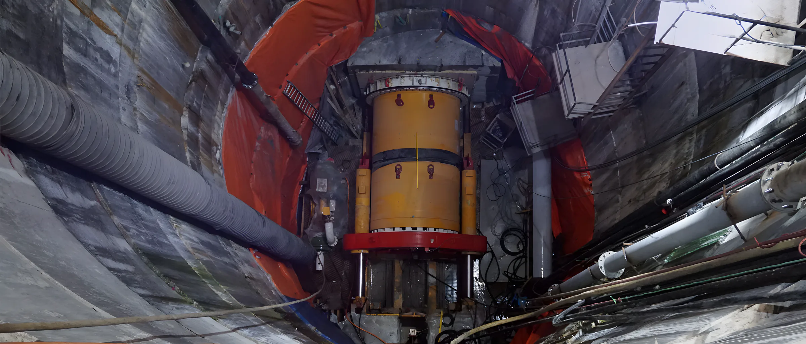
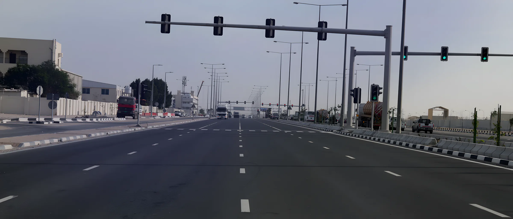
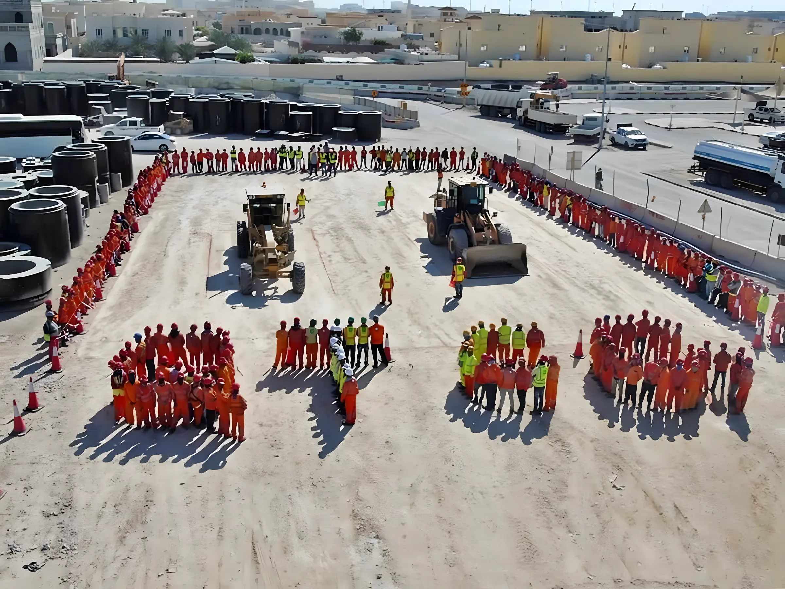

التوصيلات المنزلية
بدأنا بعقود صغيرة من وحدة التوصيلات المنزلية في هيئة الأشغال، ثم أعمال الباطن.
Qatar Trading & Contracting Group

ننفّذ الطرق وشبكات الصرف ومحطات الضخ والأنفاق الدقيقة في قطر منذ 1992، وأغلبها لهيئة الأشغال العامة "أشغال".
أغلب ما نبنيه ينتهي تحت الطريق. نمدّ خطوط الصرف الصحي والمياه والمياه المعالجة، وندفع الأنابيب تحت الأرض بالأنفاق الدقيقة حيث لا يمكن حفر الشارع، ثم نبني الطريق والإنارة والإشارات فوقها.
مقاول مدني محلي من الفئة (أ) للطرق والصرف ضمن تصنيف وزارة المالية، ومؤهّلون لبرنامج الطرق والصرف المحلي لدى أشغال منذ 2013.
ISO 9001 و ISO 14001 و ISO 45001. نظام إدارة متكامل للجودة والصحة والسلامة والبيئة في كل موقع وكل قسم.
آلة حفر أنفاق من Herrenknecht في قسم الأنفاق، لأنابيب دفع بقطر داخلي من 200 إلى 3,000 مم.
خرسانة يومياً كحد أقصى من محطة الخلط الخاصة بنا في المنطقة الصناعية الجديدة – غرب.
ساعة عمل دون إصابة مضيّعة للوقت. شهادة إنجاز، يونيو 2022.
لكل قسم مهندسوه وطواقمه ومعداته، فنقدر ننفّذ الصرف والأنفاق والأسفلت في مشروع الطريق نفسه بدون انتظار أحد.



عقودنا منذ 2005، الأحدث أولاً، مع العميل وقيمة العقد كما نُشرت.
QR 1.36bn
أكبر عقد منفرد لدينا: الطرق والبنية التحتية في المنطقة الصناعية بالدوحة، الحزمة 1.
| رقم | المشروع | العميل | السنة | القيمة (ر.ق) |
|---|---|---|---|---|
| 01 | Roads and Infrastructure in Al Ebb and Leabaib, Package 01طرق | أشغال | جارٍ | 645.0m |
| 02 | Implementation of Roadside ITSطرق | أشغال | جارٍ | 312.5m |
| 03 | Design and Construction of Lateral Interceptor Sewer LIS-01صرف صحي وتصريف · أنفاق دقيقة | أشغال | جارٍ | 1,084.6m |
| 04 | Sewer Repair, Replacement and Rehabilitation Frameworkصرف صحي وتصريف | أشغال، مشروع مشترك مع مريخ للمقاولات | جارٍ | 71.5m |
| 05 | Roads and Infrastructure in Doha Industrial Area, Package 1طرق | أشغال | 2019 | 1,360.5m |
| 06 | Micro-tunnelling, geo-drilling and grouting worksأنفاق دقيقة | 17 عميلاً | 2018 | – |
| 07 | Flow Diversion Schemesصرف صحي وتصريف | غير مذكور | 2017 | 59.0m |
| 08 | Sewer Call-Off Maintenance, Phase 1صرف صحي وتصريف | أشغال | 2016 | 71.5m |
| 09 | Flow Diversion Scheme for Pumping Stations PS 31 and PS 5 (C785)صرف صحي وتصريف | أشغال | 2016 | 65.5m |
| 10 | Flow Diversion Schemes for PS12B1 and PS Barzan Camp (DW047)صرف صحي وتصريف | أشغال | 2014 | 17.0m |
| 11 | Paving works at QAPCO Complex, Mesaieed (design, supply and build)طرق | قابكو | 2013 | 9.0m |
| 12 | Doha and Rayyan Sewerage: Mesaimeer Area Sewerage, Phase 1 (CP 626/1)صرف صحي وتصريف | أشغال | 2013 | 139.8m |
| 13 | Local Roads and Drainage: PS 70 Interceptor Trunk Sewer, Package 1 (CP 745/1)صرف صحي وتصريف | أشغال | 2013 | 63.9m |
| 14 | Doha and Rayyan Sewerage: Sewerage Schemes in Various Areas, Package 2 (CP 751/2)صرف صحي وتصريف | أشغال | 2012 | 22.7m |
| 15 | Road Improvement Works in Rayyan Areasطرق | أشغال | 2012 | 43.3m |
| 16 | Road Improvement Works in Doha Areasطرق | أشغال | 2011 | 35.0m |
| 17 | Road Improvement Works in Zone 56طرق | أشغال | 2009 | 25.1m |
| 18 | Road Improvement Works in Al Khor, Phase 2طرق | أشغال | 2009 | 13.1m |
| 19 | Diversion of Existing Utilitiesطرق · صرف صحي وتصريف | بروة | 2009 | 28.8m |
| 20 | Link Road from Dukhan Highway to Umm Hatab Swal (road improvement)طرق | أشغال | 2009 | 19.8m |
| 21 | Doha and Rayyan Sewerage: Industrial Area Sewerage, Phase 4 (CP 505/2)صرف صحي وتصريف | أشغال | 2009 | 76.4m |
| 22 | Doha and Rayyan Sewerage: Al Sudan Area Sewerage (CP 722)صرف صحي وتصريف | أشغال | 2008 | 11.7m |
| 23 | Internal Roads Lighting for Rawdat Al Faras Farmطرق | أشغال | 2008 | 14.1m |
| 24 | Road Improvement Works in Azizia, Sudan Zone 55طرق | أشغال | 2007 | 6.4m |
| 25 | Al Mamoura Area Sewerage Connectionsصرف صحي وتصريف | أشغال | 2006 | 8.1m |
| 26 | Sewers by Micro-tunnelling at CTC Army Camp, Al Sailiyah (B1165)أنفاق دقيقة · صرف صحي وتصريف | أشغال | 2006 | 17.4m |
| 27 | Doha and Rayyan Sewerage: Games Village Trunk Sewer PS 15 (CP 695)صرف صحي وتصريف | أشغال | 2006 | 17.4m |
| 28 | Road Improvement Works in Zone 67, Dohaطرق | أشغال | 2005 | 3.1m |
القيم بالريال القطري كما نشرتها المجموعة. السنة هي سنة الإنجاز.
كسّاراتنا وغرابيلنا تنتج الركام وطبقة الأساس لطرقنا، والفائض نبيعه في السوق المحلي. ومحطة الخلط في المنطقة الصناعية الجديدة – غرب تورّد الخرسانة لمواقعنا، حتى 300 م³ يومياً.

من توصيلات منزلية لهيئة المياه إلى أكبر أنفاق الصرف في الدوحة.
بدأنا بعقود صغيرة من وحدة التوصيلات المنزلية في هيئة الأشغال، ثم أعمال الباطن.
أول مشروع أنابيب وصرف كمقاول رئيسي. وبعدها بسنتين دخلنا الطرق كمقاول باطن.

أدخلنا دفع الأنابيب بدون حفر حتى تمرّ الخطوط تحت الطرق والحركة مستمرة. واليوم يستعين بنا مقاولون آخرون في هذا العمل.

أول مشروع طرق كمقاول رئيسي، ثم أعمال تحسين الطرق في الدوحة والريان والخور والمناطق 55 و56 و67.

تأهّلنا لبرنامج الطرق والصرف المحلي لدى أشغال، وفزنا بمشروع الطرق والبنية التحتية في المنطقة الصناعية، الحزمة 1. وفي 2016 جاء مشروع LIS-01، خط الصرف الاعتراضي الجانبي.

3,300
أكثر من 150 مهندساً معتمداً، ومعهم مسؤولو الجودة والسلامة والمسّاحون ورؤساء العمال والمشغّلون والفنيون. قسم الموارد البشرية يبحث دائماً عن كفاءات مؤهلة ومسؤولة.
مبنى 440، شارع 250، منطقة 40، السلطة الجديدة، الدوحة
ص.ب 9887، الدوحة، قطر